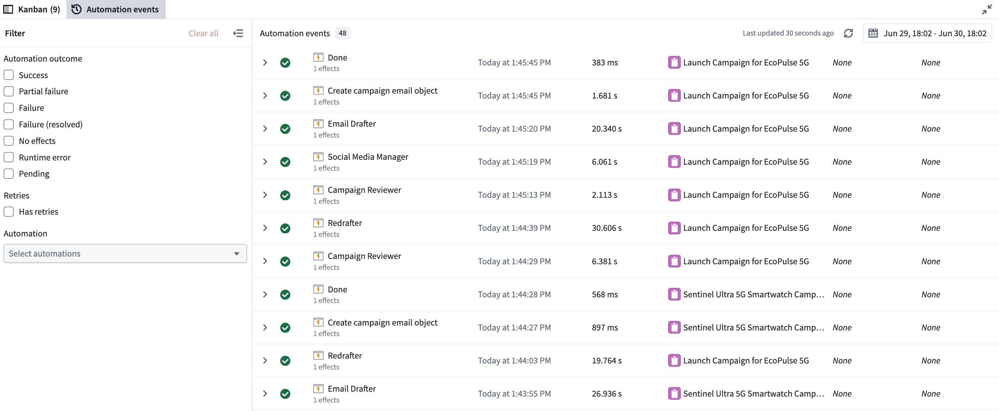
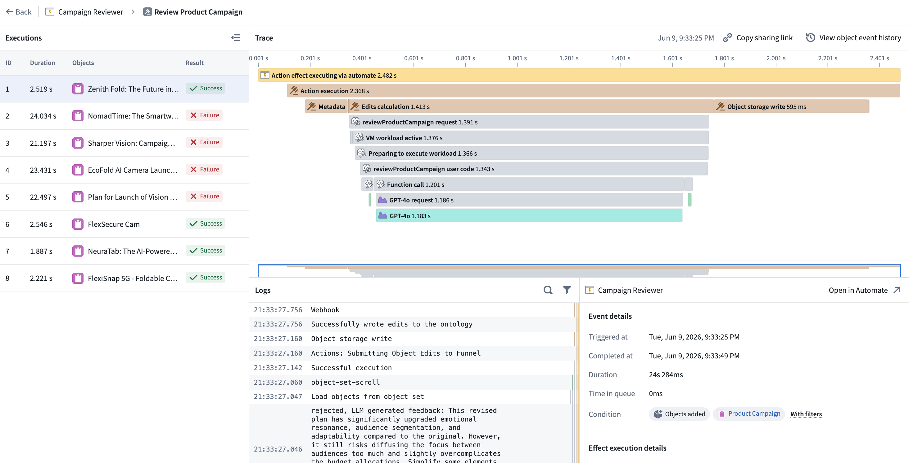

The Automation events tab provides observability into all automation events across your workbench. Monitor system performance, investigate failures from the automation down to the logic block, and understand how automations are processing objects over time. Each event entry displays the automation name, effect and fallback action (if applicable), event details, outcome (success, failure, or fallback triggered), and triggering objects. Executions are grouped by batches, aligned with the Automate history view, so you can see each execution alongside the individual objects within the run.
You can filter events by the following:

Select any event to drill into per-object trace logs with step-by-step details, inline links to related resources, error messages and stack traces for failures, and timing information to spot performance bottlenecks. Much of this context surfaces directly in Autopilot, so you can investigate without traversing multiple products within the platform.

:::callout{theme="neutral"}
For more granular logs, consider using console in your TypeScript functions or import logging in your Python functions.
:::
Use the following best practices to help you troubleshoot failures in your automations:
Beyond debugging, the Automation events tab provides ongoing visibility into system performance over time. Use it to track how frequently automations run, where failure rates are increasing, which automations are processing the most events, and whether event times are growing. Monitoring these trends helps you identify and address issues before they affect your workflow.